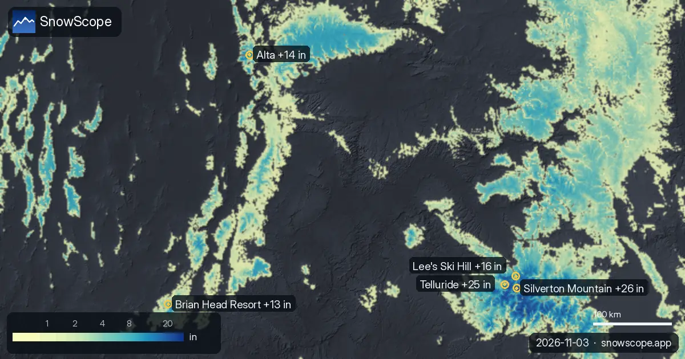

Is Silverton Mountain's 92 cm already deeper than 46 past winters?
Silverton Mountain's mid-slopes hold 36 in (92 cm), deeper than every winter on record for this date. This unusual early-season snow began three days ago when 26 in (66 cm) fell in just 72 hours.
See the live snow forecast for Silverton Mountain in the SnowScope appSnow depth, powder alerts and the 3D map, free.
How an early storm filled the high mountains
An atmospheric system moved through the high mountains of southern Colorado in the first three days of November, delivering frozen precipitation at altitudes where it sticks for the season. The storm brought 26 in (66 cm) of snow across the region over three days. Field measurements confirmed the magnitude: at Red Mountain Pass, 5.3 kilometres from Silverton Mountain, a weather station recorded 11 in (28 cm) in just the 24 hours ending November 1st.
The air remained cold enough that precipitation fell as snow all the way down to mid-mountain elevations, an early-season blessing for winter snow depth. The freezing level on November 3rd ranged from 2,680 metres to 3,420 metres, keeping the highest slopes well-primed for the season ahead. From a water storage perspective, this early-season snow represents significant frozen water that will feed rivers and reservoirs as the season progresses.
| Resort | Snow depth | New snow, 72 h | Coming, next days | Top |
|---|---|---|---|---|
| Silverton Mountain | 52 in (131 cm) | 26 in (66 cm) | 2 in (5 cm) | 10,974 ft (3,345 m) |
| Telluride | 51 in (130 cm) | 25 in (64 cm) | 2 in (5 cm) | 12,507 ft (3,812 m) |
| Lee's Ski Hill | 34 in (87 cm) | 16 in (40 cm) | 2 in (5 cm) | 7,943 ft (2,421 m) |
| Alta | 15 in (37 cm) | 14 in (36 cm) | 1 in (2 cm) | 10,554 ft (3,217 m) |
| Brian Head Resort | 17 in (44 cm) | 13 in (34 cm) | 0 in (1 cm) | 10,909 ft (3,325 m) |

Which mountains captured the heaviest snow
The storm did not fall uniformly across the region. Purgatory Resort received 29 in (73 cm) of snow according to model estimates within 72 hours, with the heaviest cell located about 20 kilometres from the resort. Wolf Creek, also in southwestern Colorado, captured 24 in (61 cm). Telluride, 9 kilometres south of Silverton, received 25 in (64 cm) in the same 72-hour window and now holds 43 in (130 cm) on its upper slopes.
Measurement stations add local detail to this pattern. At Chepeta, one of the highest stations in the region at 3,197 metres, 12 in (30 cm) fell in 24 hours, leaving a base of 20 in (51 cm). By contrast, Alta in Utah received only 14 in (36 cm) in 72 hours and now shows just 15 in (37 cm) on upper slopes. Lee's Ski Hill, near Ouray at much lower elevation, saw 16 in (40 cm) fall but remains patchy—a nearby station measured zero snow on November 1st, indicating that early-season powder sits on bare ground at lower elevations.
Why 92 cm in early November is exceptionally rare
On November 3rd, Silverton Mountain holds 36 in (92 cm) at mid-height, at 3,244 metres elevation. The long-term average for this height on this date is just 3 in (7 centimetres). Our modelled estimate at this location is 1,314 percent of normal—thirteen times deeper than a typical early November day.
More strikingly, this depth exceeds every single measured November 3rd in the past 46 winters on record. When early snow reaches this depth this early, it means precious stored water before the winter cycle fully begins. Such early-season snowpack, if it persists and deepens as November progresses, becomes genuine season-opening storage—frozen water that determines seasonal river flow and water availability.
What the forecast brings next
The storm is weakening. Models predict 2 in (5 centimetres) of additional snow across the high mountains in the next seven days, with today and tomorrow seeing the most. The freezing level will drop significantly on November 5th to 1,670 metres, potentially pushing snow to slightly lower elevations.
By November 6th, essentially no new snow is expected, and the freezing level will rise again to around 2,040 metres. This short pause gives the new snowpack a chance to settle and bond to underlying snow or ground. Early-season snow often remains unstable as the ground beneath slowly cools and as sun exposure during the day creates melt-freeze cycling.
What this means for skiers and backcountry use
Silverton Mountain's upper slopes hold 23 in (58 cm), skiable powder but thin for November. The base, at 3,143 metres, shows just 13 in (32 cm), meaning rocks and exposure hazard exist on lower terrain. Telluride offers different depth variation: 2 in (6 centimetres) at the base and 43 in (109 cm) at the summit, requiring careful terrain choice.
Avalanche danger today is rated level 3 (considerable) by the Colorado Avalanche Information Center; anyone riding steep or avalanche-prone slopes must check their official bulletin. All the recent powder is real, but inspect ground surfaces carefully—expect breakable crust beneath the fresh snow as afternoon sun exposure continues. The region is ski-able for those who know the terrain, but this is early-season snow on early-season conditions, not deep winter powder.
Tips for skiers
- Seek powder on Silverton Mountain and Telluride's upper slopes; avoid lower elevations where rocks and thin coverage dominate.
- Early November snow often sits loose on cold, bare ground; probe and inspect before committing to steep terrain.
- Check the Colorado Avalanche Information Center official bulletin before any backcountry travel: level 3 (considerable) danger today.
- The freezing level will drop to 1,670 metres on November 5th, extending skiable snow to slightly lower elevations but raising instability risk.
- Sun-facing slopes will develop crust by midday; north-facing aspects hold fresh powder longer in this early season.
About these numbers
Resort snow depths are the deepest snow on the resort's upper slopes from the SnowScope snow model (about 1 km, run of 3 November); they are estimates for an area, not a measurement at one point. Station values are measurements on the date shown. Forecasts can change. Always read the official avalanche bulletin before going off-piste.
Official avalanche bulletins: Colorado Avalanche Information Center
Cite this report
For research, teaching or the press: the numbers and charts are free to reuse under CC BY 4.0 with this citation.
SnowScope (2026), Is Silverton Mountain's 92 cm already deeper than 46 past winters?, https://snowscope.app/blog/en/2026/11/us-west-fresh-snow-powder-alert-3-november-2026.html, accessed 2026-11-03
SnowScope (Atlas Labs). (2026, November 3). Is Silverton Mountain's 92 cm already deeper than 46 past winters?. SnowScope snow reports. https://snowscope.app/blog/en/2026/11/us-west-fresh-snow-powder-alert-3-november-2026.html
BibTeX
@misc{snowscope2026uswestfreshsnowpowderale,
author = {{SnowScope (Atlas Labs)}},
title = {Is Silverton Mountain's 92 cm already deeper than 46 past winters?},
year = {2026},
month = nov,
howpublished = {\url{https://snowscope.app/blog/en/2026/11/us-west-fresh-snow-powder-alert-3-november-2026.html}},
note = {Published 2026-11-03 16:31 UTC; accessed 2026-11-03}
}· CC BY 4.0 · Methods, data and tools →
Silverton Mountain: snow and temperature by height, this winter vs last (tools) →
Follow Silverton Mountain
Free: a message when fresh snow is coming, and the forecast every morning.
More snow reports

Telluride's mid-slopes show 9 in (24 cm), running 92 percent of the seasonal average for mid-November. Saturday's system adds 5 in (13 cm) mostly above 10,000 ft.

Steamboat, Colorado, for families: what works for toddlers, school-age kids, teens and parents, with the snow of 46 past winters at three heights.

How to spend a first day at Park City Mountain, Utah, and when to go: our snow history gives about 71 in (180 cm) at the usual mid-mountain peak over 46 past winters.